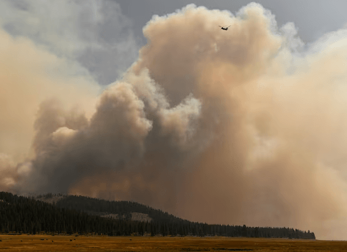
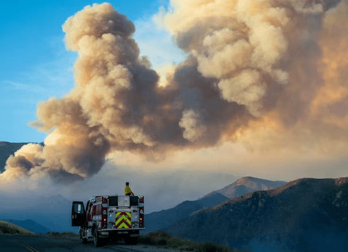

NATIONAL GEOGRAPHIC
How Siamese cats change their colors
ANIMAL
With 73 cat breeds recognized by the International Cat Association, it can be difficult to discern a Ragdoll from a Ragamuffin. Most of us, though, can pick out a Siamese cat. Known for their dark eye masks, socks, and tail called “points” that stand out against their cream colored bodies and sparkling blue eyes, the Siamese is one of the world’s easily recognized breeds.
Those trademark points stem from a genetic mutation known as the Himalayan gene, which was discovered in the breed in 2005. This recessive gene, passed down from both parents, also gives the felines temperature-sensitive fur that can change color.
In the womb, Siamese kittens develop at temperatures of about 101 Fahrenheit, a cat’s normal temperature. Once born, all-white kittens eventually begin to cool at their extremities, such as their tail, legs, ears ,and face. These lower temperatures cause the Himalayan gene to activate the body's melanin, a pigment also found in people. That's why a Siamese cat's warmer bodies stay light, but their cooler parts become darker as they mature.
“You can see them change,” says Betsy Arnold, a veterinarian who runs a cats-only practice in Rochester, New York, and started breeding Siamese when she was in her teens.
At about two weeks old, Arnold says, dark hues begin to spread to their limbs. By about a month old, their final color emerges, which may be one of several varieties, among them blue point, lilac point, chocolate point, and seal point, which has a light , cream-colored coat with dark brown hues on its paws, tail, nose, and ears.
A lifelong influence
The Himalayan mutation naturally occurs in South Asian domestic cats, says Leslie Lyons, a feline geneticist at the University of Missouri who first identified the mutation in Siamese cats.
Over time, as people selectively bred cats with the striking pale color and dark points, they passed the gene to different breeds, such as Siamese, Birmans, Ragdolls, and Burmese. Mixed breeds can also carry the genetic mutation. These cats' vibrant blue eyes are also due to the Himalayan gene, which influences their eye pigment.
The Himalayan mutation causes fur to darken as the cat ages, though any sort of trauma or change to the cat's fur can alter its hues. If a Siamese cat has surgery, for example, an area of fur that was shaved may grow back darker because the impacted area is cooler while the hair grows back. Eventually, the fur may become lighter again, Arnold says.
In the 1920s, a Siamese cat living in Moscow that wore a jacket over a shaved shoulder had its fur grow back all white, since that area was kept warmer. The fur later turned darker again, according to the University of Alaska.
Comments :
- john Very good
- john Very good
Leave a Reply
Your email address will not be published. Required fields are marked*
Related posts:
-
Wildfire smoke is transforming clouds, making rainfall less likely
Over the summer of 2018, the worst wildfire season the western United States had ever seen sent thick plumes of smoke high into the sky. Atmospheric scientist Cynthia Twohy and her colleagues spent weeks flying a giant
View article -
Wildfire smoke linked to higher COVID-19 death rates
Smoke from last year’s wildfires in California, Oregon, and Washington, contributed to a significant increase in COVID-19 cases and deaths in those states, according to a new study.
View article -
 How extreme fire weather can cool the planet
How extreme fire weather can cool the planetExtreme heat often brings extreme wildfires, and this year is no exception, with unprecedented heat waves fueling enormous outbreaks of fires in the western United States and Canada, as well as across the Mediterranean and in Siberia
View article